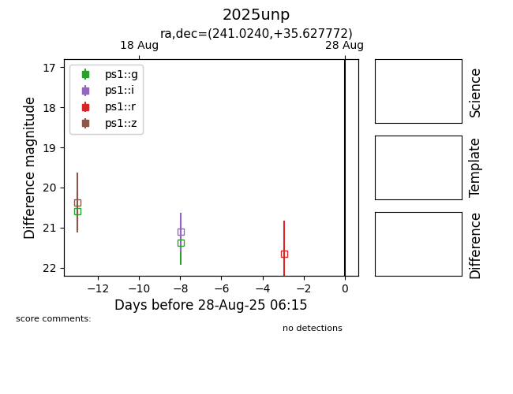

Target 2025unp at 2025-08-28 06:22, see:
YSE: ziggy.ucolick.org/yse/transient_detail/2025unp
alt names
2025unp (yse)
coordinates:
equatorial (ra, dec) = (241.0240,+35.62777)
galactic (l, b) = (57.0576,+48.42783)
photometry
